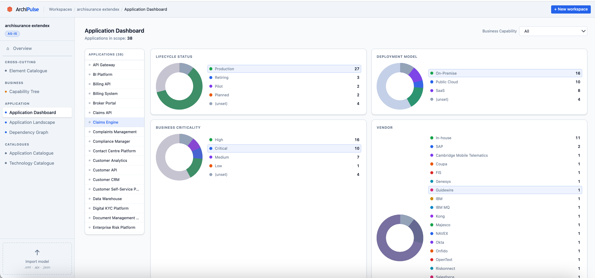
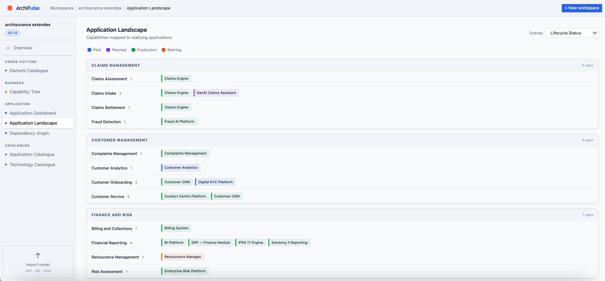
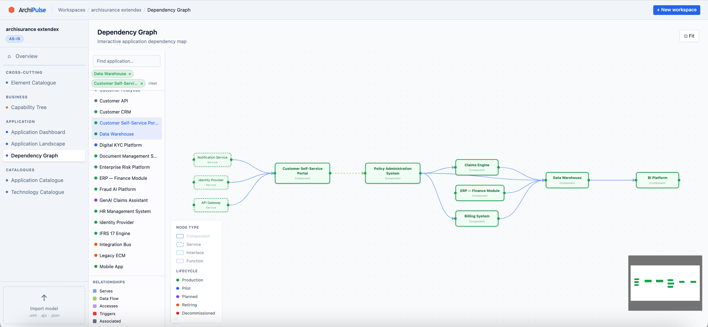
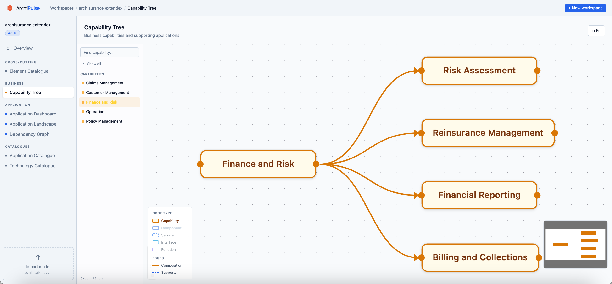

ArchiPulse stores, visualizes, and analyzes your ArchiMate models in a self-hosted web platform. Your architecture is not a static file — it's living, collaborative data.
ArchiPulse turns ArchiMate models into interactive, queryable views — built for the way architects actually work.




Most tools force you to choose between an obtuse ontology stack or an expensive closed platform. ArchiPulse takes a third path.
Proprietary formats, expensive licenses, and data you can't query. Or the other extreme: OWL ontologies, Protégé, and SPARQL queries that only academics can read.
The ArchiMate Open Exchange Format becomes the data model itself. Export is a SELECT. Import is an INSERT. Collaboration is database-native. No custom metamodel, no vendor dependency.
Everything your team needs to make EA a living, queryable, collaborative practice — not a PowerPoint exercise.
Multiple architects edit the same workspace simultaneously. Optimistic locking prevents silent overwrites. Conflicts shown with author and timestamp.
Upload an AOEF file and review element-by-element what changed and who changed it. Your model's history, readable at a glance.
Application Dashboard, Application Landscape Map, Capability Tree, Technology Catalogue — pre-defined views generated from your model data.
Interactive application dependency graph powered by XY Flow. Visualize integrations, pan and zoom, filter by lifecycle and type.
Connect real-world resource catalogs — AWS, Confluence, Excel, custom sources — to your ArchiMate workspace. Community-contributed extractors.
Import and export AOEF XML or AJX at any time. Compatible with Archi, archimate-editor, BiZZdesign, Sparx EA. Full REST API. Self-hosted.
The ArchiMate Open Exchange Format already defines what entities exist. Map them directly to PostgreSQL tables — and everything else becomes trivial.
Use Archi, archimate-editor, or any AOEF-compatible tool. ArchiPulse works alongside what you already have — it doesn't replace it.
ArchiPulse parses the model and stores it in PostgreSQL — one row per element, relationship, and diagram. XSD validated. No transformation magic.
Multiple architects edit the same workspace directly via the web interface or REST API. The enrichment pipeline pulls from external sources and maps resources to ArchiMate elements.
EAM analytical views, interactive dependency graphs, capability trees. Export back to AOEF at any time — importable in any compliant tool.
ArchiPulse is in active early development. The roadmap is managed publicly via GitHub Milestones.
We're in early development and contributions of all kinds are welcome. These are the areas with the most impact right now.
Connectors for AWS, Azure, Jira, Confluence, ServiceNow, and sources your organization uses.
SQL queries that generate meaningful analytical views — capability maps, application landscapes, tech radars.
Svelte 5 components, graph visualization, and UX improvements for the EAM analytical views.
Migrations for the AOEF-as-tables schema. The heart of the platform's simplicity and portability.
The Go parser is the first critical piece. If you know ArchiMate's Open Exchange Format, start here.
Architecture decisions, guides, and examples. Clear docs lower the barrier for every future contributor.
ArchiPulse is free, open source, and self-hosted. Apache 2.0. Your data stays in your infrastructure.